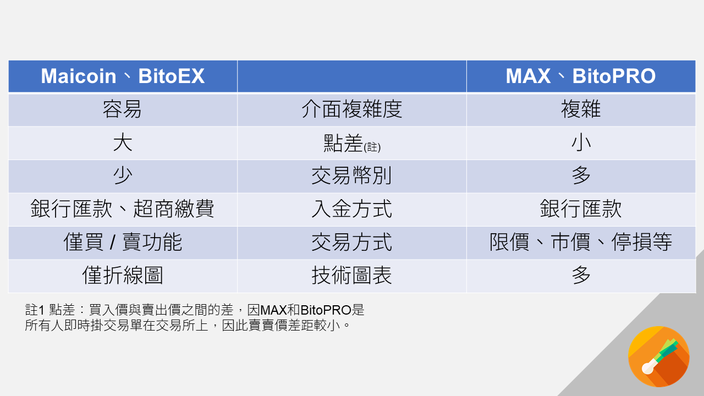

關於這麼多家要怎麼選可以看這裡。
註冊、推薦碼、邀請碼連結
🔥2021/04/28近期加密市場貪婪指數偏高，投資須謹慎！🔥
目前交易所行業處在一個新創期間，每一家都拚了命想要搶用戶，紛紛給出推薦碼這個方式讓使用者成為推廣者，而有些推薦碼是只有推薦人有獎勵的，有的則是兩邊都有。這陣子想要實際操作加密貨幣，一連開了好幾家的戶，有時候找推薦碼就找半天。這裡整理了加密貨幣交易所的推薦連結，都是我本人在使用的，各家的推薦獎勵不同
- 有的是會直接給錢（這種送的錢，通常都會暫時鎖住直到你有加值一定金額後才能在使用，畢竟交易所也怕你用一堆假身分來申請騙錢走）
- 有的是你之後給交易所付手續費的時候我能得到一點回饋（有沒有用邀請碼手續費都是相同的，差別只是全部給交易所或者是一部分會給我）
對你而言只有好處沒有壞處，如果你有親朋好友已經在使用的，那你跟他們拿推薦碼就好了，把回饋留給身邊的人吧😇。
我個人有在使用的
- Max，台灣交易所，可以新台幣入金，我個人出入金的主要途徑。老闆很有想法，我很期待他在碳權交易上對環保的貢獻，驗證大概走3天，出金試過三次都在2天完成。
- 幣安 Binance，國際交易所，我個人真正交易的地方，新台幣入金比較麻煩，可以直接刷VISA、MasterCard，但是算海外交易手續費。這裡提醒一下，因為幣安的推薦碼有分等級，而我小散戶等級不高…你可以在網路上找到其他人更高等級的推薦碼，大家掰掰，好聚好散💸。
- 派網 Pionex，國際交易所，因為手續費最低，使用網格交易的好地方，這個是沒有法定貨幣入金功能的，你要在其他地方先有數位貨幣後再轉帳進去。 網格交易：自動幫你掛一堆單設定低買高賣。因為低手續費才能在掛多單時中風險中回報，無腦保本好用。
- Coinbase，國際交易所，Earn學院看影片能拿免費的小幣，之後會寫篇教學。(04/04更：我拿的小幣翻了好幾倍，雖然只有幾十鎂但還是挺開心🤑)
- FTX，國際交易所，購買美股權證的地方，很有趣，能夠用類似代幣的方式買到美股Tesla、AirBnb、Apple等等。還可以預測真實事件，最近有個預測東京奧運會不會在2021成功的合約。
- Crypto.com，國際交易所，我看著他們谷底翻身，原先合作發卡的都是些東歐小銀行，是Crypto求著他們幫忙發卡。現在換成Visa來找他們合作了！
以下是我其實沒有常用或者比較不推薦的，我個人比較推薦上面那些地方，但是也歡迎你使用我的連結註冊：
- BitoPro，台灣交易所 ，老牌穩定的交易所，我個人沒在用，但是是優質的交易所 。
- BitAsset，台灣交易所，我個人沒在用，在審核卡住之後我就沒繼續去處理。
- ACE，台灣交易所，審核蠻嚴格的，我審了兩次都沒過…已經放棄。
這些交易所都是我在市場上逛一圈後比較可靠的，關於如何挑選交易所可以看我另一篇文章
其中台灣有兩家交易所我沒有列出來，分別是Maicoin(和MAX同集團)和BitoEx(和BitoPRO同集團)，這兩家交易所是沒有推薦碼的。順便說一說為甚麼他們明明是同集團的業務卻要分成兩家公司。
- 在Maicoin和BitoEX可以理解成「去銀行換外幣」。
- 在MAX和BitoPro則理解成「在證券交易所搓合買賣雙方」。
我將其中差異整理成下表  這兩邊還有一個差別是「不會滑價」，目前兩家交易所交易深度有限，如果你對金融市場不熟悉且需要一次大量購買/賣出，你會需要使用BitoEX和Maicoin，否則會發生「插針」慘劇(BitoPro 、MAX )。 這兩家都有推出類似債權的金融產品，但是M家的「收滿益」放在Maicoin中，B家的「BitoDebt」則放在BitoPro中。(04/04更：目前我看是在年化10%上下)
另外有關幣安推薦碼，他可以由用戶決定「你要給予好友多少回饋」，像是我的話可以決定給予好友 0%或者 10%，這個設計我覺得真的是蠻懸的…總之我上面放的連結是我們一起10/10分的。

你也可以在下面的留言處自由放上你的推薦碼，跟我的有重複也沒關係，只要是正規的交易所我都會將你的留言保留下來，我覺得比較有風險的我會直接刪除留言。
祝 交易愉快。